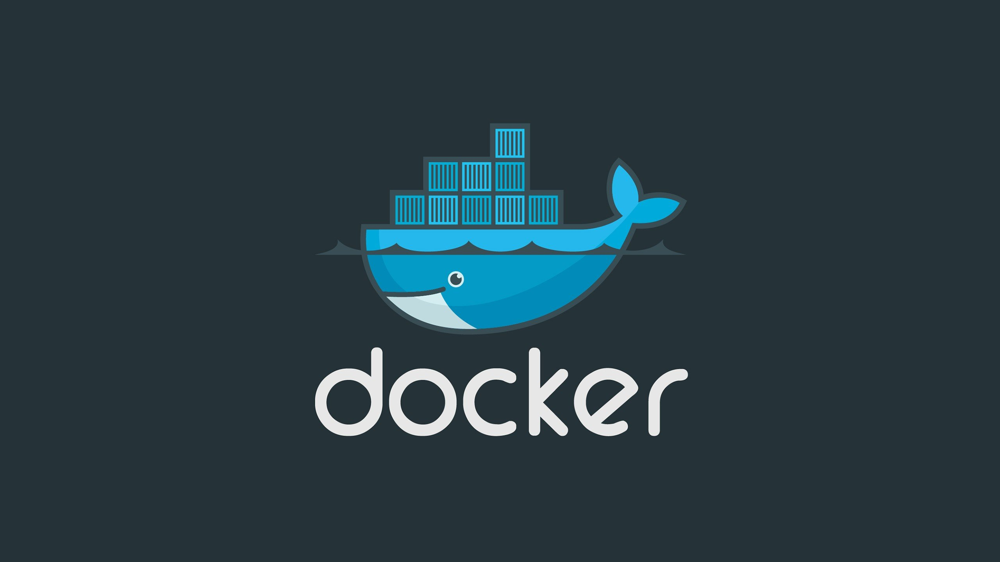

DevOps Tutorials point
This part of the Jenkins User Documentation contains a series of introductory tutorials to help you begin
building your applications in an automated fashion with Jenkins.If you’re a developer who wants to improve your
understanding of Continuous Integration (CI) / Continuous Delivery (CD) concepts, or you might already be familiar
with these concepts but don’t yet know how to implement them in Jenkins, then these tutorials are a great place to start
The following tutorials show how to use key features of Jenkins to facilitate implementing CI/CD processes to build your
applications: Getting started with Jenkins Pipeline Publishing HTML Reports in Pipeline (Declarative Pipeline, Scripted Pipeline)
Sending Notifications in Pipeline (Declarative Pipeline, Scripted Pipeline) End-to-End Multibranch Pipeline Project Creation
Creating a shared library Faster Pipelines with the Parallel Test Executor Plugin Converting Conditional Build Steps to Jenkins Pipeline
Pipeline Development Tools


Name of Technology |
Click to goTutorial |
Jenkins Tutorial |
|
Docker Tutorials |
 |
Java Tutorials |
|